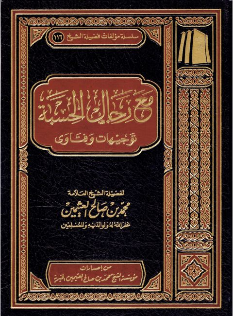

مع رجال الحسبة توجيهات وفتاوى
Authors: محمد بن صالح العثيمين
Publishers: مؤسسة الشيخ محمد بن صالح العثيمين الخيرية
Download Downloads need an internet connection.
- Published
- 1433هـ 2012م
- Country
- القصيم، السعودية
- Edition
- 1
- Volumes
- 1
- Pages
- 273
- Type
- كتاب
- Category
- الدعوة والاحتساب
Description
▫️ العنوان: مع رجال الحسبة توجيهات وفتاوى ▪️ المؤلف: #محمد_بن_صالح_العثيمين ▫️ الناشر: #مؤسسة_الشيخ_محمد_بن_صالح_العثيمين_الخيرية ▪️ تاريخ النشر: 1433هـ 2012م ▫️ بلد النشر: القصيم، #السعودية ▪️ الطبعة: 1 ▫️ عدد الأجزاء: 1 ▪️ الصفحات: 273 ▫️ نوع الوعاء: #كتاب ▪️ التصنيف الرئيسي: #الدعوة_والاحتساب ۪